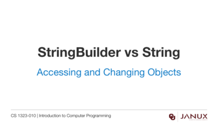
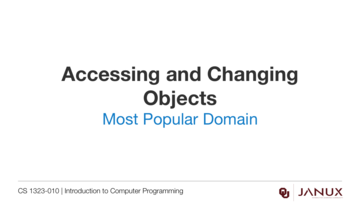

Accessing and Changing Objects
This section covers accessing and changing objects.
Introduction to accessing and changing the properties of objects.
The Java code for a program that counts the number of email addresses from a given domain.
The test data for a program that counts the number of email addresses from a given domain name.
Lecture presentation
Lecture presentation

